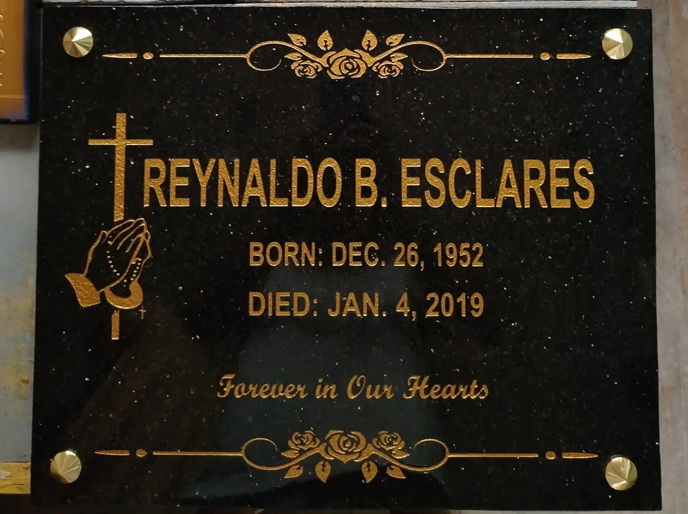
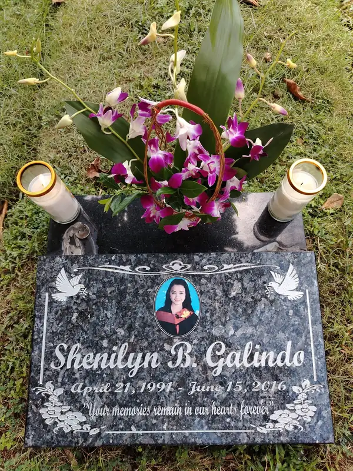
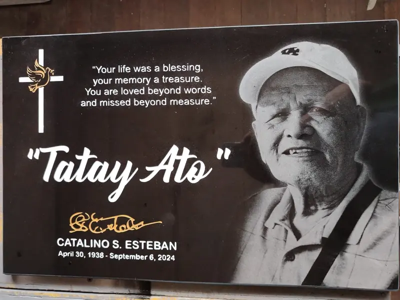

Lapida Engraving & Lettering
Names, dates and inscriptions engraved in silver, gold or black lettering, with engraved crosses, doves, praying hands and borders.
Learn more about Lapida Engraving & LetteringRodriguez (Montalban), Rizal
Kafred Granite & Marble Installation Services creates carefully crafted memorial stones and provides dependable granite and marble fabrication and installation from Burgos, Rodriguez (Montalban), Rizal.

Black galaxy granite · gold lettering · brass fittings

Introduction
Kafred Granite & Marble Installation Services is a lapida maker and stone installer based in Burgos, Rodriguez (Montalban), Rizal.
We engrave and fabricate memorial plaques in black granite, black galaxy granite, blue pearl granite and white marble, and we install the finished stone at the gravesite or on the wall it was made for. Inscriptions, portraits, borders and ornaments are laid out to suit each family's wishes.
A lapida is a lasting tribute. We treat every order with the respect it deserves, from the first conversation about wording and materials to the final installation.
About KafredServices
Memorial engraving, granite and marble work, and installation, handled from one shop in Rizal.
Names, dates and inscriptions engraved in silver, gold or black lettering, with engraved crosses, doves, praying hands and borders.
Learn more about Lapida Engraving & LetteringMemorial plaques made to your design, with ceramic photo inserts, etched portraits, and layouts for one person or a family.
Learn more about Custom Lapida & Memorial StonesBlack, black galaxy and blue pearl granite cut, finished and installed with brass fittings or set in place at the site.
Learn more about Granite Fabrication & InstallationWhite and veined marble plaques and stonework, engraved and installed with care for the material's natural character.
Learn more about Marble Fabrication & InstallationOur Work
Photographs of lapida and memorial plaques we have made. Click any image to view it larger.

Why Kafred
Simple reasons, grounded in the way we work.
Every letter, date and ornament is checked before the stone leaves the shop, so inscriptions read cleanly and stay true to what the family asked for.
Layouts are arranged with care for balance and legibility, whether the plaque carries a single name, a family, a portrait or a verse.
The work shown on this site is our own: granite and marble plaques finished by hand and fitted with the right hardware for their setting.
Beyond fabrication, we install the finished stone, so the plaque sits properly at the gravesite or on the wall it was made for.
You speak with the people who make the stone. Call or message us to discuss wording, materials, sizes and installation before anything is cut.
Inquire
Tell us about the inscription, material and size you have in mind. We will talk you through the options with no pressure.